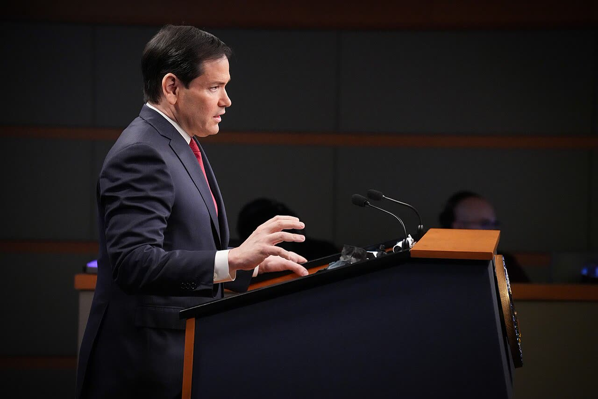

Rubio prima di Abu Dhabi: anche Mosca deve accettare le garanzie per Kiev
L'ha detto il 9 novembre a Parigi, «in order for it to work»: le testate italiane che abbiamo letto la tacciono, TASS e UNN la gonfiano. Il nodo è chi farà scattare la garanzia, e Roma deve sapere chi paga e quanto.
Redazione Contrappunto · aggiornato il 10.11.2026


Il 10 e 11 novembre, ad Abu Dhabi, negli Emirati Arabi Uniti, delegazioni di Stati Uniti, Russia e Ucraina trattano su come chiudere la guerra, ormai al quinto anno. È il primo incontro a tre dal 18 febbraio. Al centro ci sono le garanzie di sicurezza: le promesse che dovrebbero proteggere l'Ucraina da un nuovo attacco dopo la pace. La sera prima, il 9 novembre a Parigi, Marco Rubio, segretario di Stato (il ministro degli Esteri) di Donald Trump, ha detto che quelle garanzie devono essere qualcosa che accetta anche la Russia. Gli europei, Italia compresa, sono ad Abu Dhabi ma non al tavolo a tre. I colloqui sono in corso: un esito non c'è ancora.
Vedi di più: 9 parole spiegate, cosa si racconta
Cosa si raccontaIn Italia la vigilia è raccontata come la storia della stanza accanto: il Giornale, Il Tempo e il lancio Italpress scrivono che gli europei, Italia compresa, sono ad Abu Dhabi ma fuori dal tavolo, e riportano Palazzo Chigi: l'Europa parli con una voce sola. La frase di Rubio sulle garanzie non c'è. All'estero c'è, ma più forte di come l'ha detta: per l'agenzia di Stato russa TASS le garanzie «cannot be provided without Russia’s consent», per la testata ucraina UNN Kiev avrà «only those security guarantees that Russia agrees to». Guardian, Politico ed Euronews guardano altrove: articolo 5, europei esclusi per volontà russa, territori. [il Giornale] [Il Tempo] [Italpress via Il Tempo] [TASS, agenzia di Stato russa] [UNN (Ucraina)] [The Guardian] [Politico Europe] [Euronews]
- Garanzie di sicurezza
- Gli impegni di uno o più paesi a proteggere l'Ucraina se fosse attaccata di nuovo dopo la pace. Possono andare dagli aiuti militari a un obbligo di intervenire. Cosa conterranno non è deciso: lo dice lo stesso Rubio.
- Attivare una garanzia
- Decidere che c'è stata una violazione e che gli impegni scattano: chi lo stabilisce, con quale voto e in quali tempi. È la parte che nessuna fonte ha ancora descritto.
- Articoli 4 e 5 della Nato
- Del trattato dell'Alleanza atlantica (Washington, 1949). L'articolo 5 è la difesa collettiva: un attacco a un membro è un attacco a tutti. L'articolo 4 prevede consultazioni tra gli alleati quando uno si sente minacciato.
- Trilaterale
- L'incontro a tre: Stati Uniti, Russia e Ucraina. Gli europei hanno avuto una riunione separata con americani e ucraini prima del tavolo.
- G7 Esteri
- La riunione dei ministri degli Esteri del G7, il gruppo delle sette grandi democrazie industriali di cui fanno parte anche Italia, Francia, Germania e Regno Unito. Il 9 e 10 novembre si è tenuta a Parigi.
- TASS
- L'agenzia di stampa di Stato russa. Non è sotto sanzioni Ue come RT e Sputnik, ma quello che scrive va attribuito come voce del governo russo.
- Witkoff e Kushner
- Steve Witkoff e Jared Kushner, inviati di Trump per il negoziato. Kushner è anche il genero del presidente.
- Kaja Kallas
- Alta rappresentante dell'Unione europea per la politica estera, cioè il capo della diplomazia Ue.
- Palazzo Chigi
- La sede della presidenza del Consiglio: per estensione, il governo Meloni.
- Il 9 novembre a Parigi il segretario di Stato Usa Marco Rubio ha detto che le garanzie di sicurezza per Kiev devono essere qualcosa che accetta anche la Russia, perché funzionino. Un piano concreto, ha aggiunto, ancora non c'è.
- Il 10 e 11 novembre Usa, Russia e Ucraina trattano ad Abu Dhabi; europei e Italia sono lì, ma non al tavolo a tre. Le testate italiane che abbiamo letto non hanno riportato la frase di Rubio.
Il coro regge a metà. Il Giornale, Il Tempo e il lancio Italpress raccontano gli europei nella stanza accanto e l'Italia alla riunione di coordinamento. È vero. Ma manca la frase più importante della vigilia, detta da Rubio il 9 novembre a Parigi: la garanzia per Kiev deve essere qualcosa «that Russia agrees to as well in order for it to work». Non la riporta nemmeno il Guardian. [11] [12] [13] [7] [1] [2]
All'estero l'hanno gonfiata, da due parti opposte. L'agenzia di Stato russa TASS titola che le garanzie «cannot be provided without Russia’s consent», l'ucraina UNN che Kiev avrà «only those security guarantees that Russia agrees to». Rubio ha detto un'altra cosa: perché funzioni. Lui stesso aggiunge «I'm stating the obvious». TASS poi ricava una conferma sull'articolo 5 della Nato da cinque parole, «All of those things are», e lascia fuori il Rubio che si definisce solo «facilitator». [2] [5] [1]
Alla lettera è ovvio: una garanzia che Mosca rifiuta è un motivo per non firmare, e la guerra continua. La domanda vera è un'altra: chi farà scattare la garanzia, e con quale voto? Se Mosca deve solo accettare che esista, non è un veto. Se deve dire sì anche quando va usata, lo diventa. Nessuno l'ha scritto: un piano concreto, dice Rubio, non c'è. [2] [1]
La tesi opposta va presa sul serio. Una garanzia che piace a chi ha invaso protegge poco: Kaja Kallas, capo della diplomazia Ue, ricorda che la Russia ha già firmato impegni su sovranità e confini e non li rispetta. E se gli europei restano fuori dal tavolo per volontà di Mosca, come scrivono Politico e, citando il Cremlino, TASS, la sicurezza dell'Europa si tratta senza l'Europa. [7] [19] [10] [2]
Qui entra l'Italia. Meloni ha scritto a Costa che non chiede un posto per l'Italia; Palazzo Chigi fa sapere che garanzie, ricostruzione e sanzioni dipendono anche da decisioni europee, cioè anche da soldi e impegni nostri. Il nostro punto, ed è un'opinione: trattare con Mosca è giusto, e una guerra lunga non conviene a noi. Ma prima di firmare qualsiasi garanzia Roma chieda per iscritto chi garantisce, chi decide quando scatta, chi paga e quanto. Senza risposte, niente firma. [18] [12] [13]
La verifica punto per punto21 passaggi, 19 fonti
Qui sotto ogni cosa scritta sopra, una per una, con le fonti. Confermato: lo dice un documento originale o più fonti lette. Plausibile: lo riportano fonti serie, ma non abbiamo letto l'originale. Discordante: le fonti danno numeri diversi, e diciamo quali. Ipotesi e Opinione sono il nostro ragionamento, separato dai fatti.
Cosa ha detto Rubio, e quando
Il 9 novembre a Parigi, ai giornalisti a margine del G7 Esteri, Rubio ha detto che per finire la guerra l'Ucraina deve sentirsi sicura dopo, e che la garanzia deve essere qualcosa «that Russia agrees to as well in order for it to work». Stesso testo in TASS, Kyiv Independent e Ukrainska Pravda; la trascrizione ufficiale è bloccata.
Ha aggiunto: «I'm stating the obvious, but I think that's why these talks are so critical» (frase intera solo in TASS). E: «I don't think we've settled on a final concrete plan on that». Un trattato? «potentially», ma non discusso «at that level of detail yet». Gli Usa, dice, fanno da «facilitator».
Lo stesso giorno, per AP, Rubio ha detto che un ruolo europeo nei colloqui diretti andrebbe bene, ma non ora: «Ultimately, it would be a positive, but we’ve got a ways to go». Il Giornale e il Sole 24 Ore pubblicano queste parole, tradotte, il 10 e senza data.
Nelle trascrizioni lette (TASS, Kyiv Independent, Ukrainska Pravda, UNN, AP) Rubio non parla di territori né del Donetsk, regione dell'Ucraina orientale: è una delle quattro da cui Mosca chiede a Kiev di ritirarsi, anche dove non l'ha mai occupata (Euronews).
Come l'hanno titolata: dall'ovvio al veto
Rubio pone una condizione perché la garanzia funzioni; i titoli ne fanno una condizione per darla. TASS: «cannot be provided without Russia’s consent», e in apertura «only with the security guarantees that Russia will also agree to». L'ucraina UNN: «only those security guarantees that Russia agrees to». Il Kyiv Independent resta vicino: «must also be acceptable to Russia».
TASS scrive che Rubio «confirmed» garanzie simili all'articolo 5 della Nato; la risposta citata è un frammento, «All of those things are». Kyiv Independent e Ukrainska Pravda riportano solo che un piano non c'è. Che se ne sia parlato con Mosca lo dicono funzionari Usa anonimi al Guardian e a Euronews.
La frase del 9 manca nelle testate italiane lette: il Giornale, Il Tempo, Italpress, la diretta del Sole 24 Ore. Il Guardian cita un'altra frase di Rubio. Il manifesto è dietro abbonamento: letto solo il sommario.
Chi siede al tavolo e chi nella stanza accanto
Ad Abu Dhabi trattano, a porte chiuse, gli inviati di Trump Steve Witkoff e Jared Kushner, Vladimir Medinsky, consigliere di Putin, e Rustem Umerov, capo dell'intelligence estera ucraina. L'ultimo incontro a tre era stato a Ginevra, il 18 febbraio.
Prima, Witkoff ha incontrato «Ukraine, the EU, NATO, Germany, France, the United Kingdom and Italy» (post su X, via Al Jazeera). Per l'Italia c'era il consigliere per la sicurezza nazionale Fabrizio Saggio (Italpress).
Gli europei sono «in the building or nearby» (un funzionario Ue al Kyiv Post), non al tavolo: per Politico «due to Russian objections». Il portavoce del Cremlino Dmitry Peskov dice «impossible» la loro presenza (TASS); anche Kiev, il 30 ottobre, li dava fuori dal gruppo a tre.
A Parigi il ministro degli Esteri tedesco Johann Wadephul: «Europe belongs at this table. There can be no solution without Europe, only with Europe» (AP).
Kaja Kallas: «We already have a European security architecture in place». Per il Guardian al G7 di lunedì, aggiungendo che la Russia «is not respecting these agreements»; per AFP a Varsavia il 6 novembre, con «Putin does not have a veto over European security».
Roma: una voce sola, nessun posto
Fonti anonime di Palazzo Chigi, in un solo lancio ripreso da tre testate: «Molti elementi di un accordo complessivo dipendono da decisioni europee: garanzie di sicurezza, ricostruzione, sanzioni e percorso europeo dell’Ucraina». Su governo.it nessuna nota.
Nella lettera ad Antonio Costa, presidente del Consiglio europeo, Giorgia Meloni scrive: «non sto chiedendo un posto per l’Italia in questo o in quel formato», e chiede di decidere chi rappresenta l'Ue al tavolo «e con quale mandato». Tra le testate lette la riporta solo Open.
Tra le righe: chi preme il bottone
La frase di Rubio è una condizione perché la garanzia funzioni, non un diritto di veto concesso a Mosca.
Ragionamento: Il testo comune alle tre trascrizioni dice «in order for it to work», e Rubio stesso la presenta come un'ovvietà. «Only», «without consent» e «solo» compaiono nei titoli e nelle aperture di TASS e UNN, non nelle sue parole.
Se il consenso russo diventa un veto lo decide il meccanismo di attivazione: chi stabilisce che la garanzia scatta, e con quale voto. Se Mosca deve solo accettare che esista, non è un veto; se deve dire sì anche per usarla, lo è. Nessuna fonte letta lo descrive.
Ragionamento: Rubio dice che un piano concreto non c'è e che di un trattato non si è parlato a quel livello di dettaglio. Nessuna delle fonti lette, italiane o estere, descrive chi attiverebbe la garanzia.
Discutere prima le garanzie e poi i territori dà a Mosca una leva: se le garanzie devono andarle bene, il suo sì vale anche sul resto.
Ragionamento: Secondo funzionari Usa anonimi, il primo giorno è dedicato alle garanzie e il secondo ai territori (Politico); uno di loro dice che il Donetsk non si risolve «until they know what the security architecture is going to be after the war» (Euronews). Fiducia media: solo fonti anonime.
TASS ha tenuto la parte di Rubio che serve a Mosca e lasciato fuori quella che la smonta.
Ragionamento: Nel pezzo di TASS del 9 non ci sono il trattato, il ruolo di «facilitator» né le parole sugli europei riportate da AP; c'è invece una «conferma» sull'articolo 5 ricavata da un frammento. Sono omissioni contate dal Verificatore, il motivo è una nostra lettura.
La tesi più forte contro la nostra
Chi ci legge un veto ha argomenti seri: una garanzia che piace a chi ha invaso protegge poco, e la Russia, ricorda Kallas, ha già firmato impegni che non rispetta. Con gli europei fuori per volontà di Mosca, la sicurezza dell'Europa si tratta senza l'Europa.
Il nostro punto
Rubio dice l'ovvio, e fa bene: una pace che una parte rifiuta non chiude la guerra. Ma accettare una garanzia o poterla bloccare non è la stessa cosa, e nessuno ha ancora scritto quale delle due.
Meloni non chiede un posto per l'Italia: va bene, se in cambio chiede condizioni. Prima di impegnarsi, Roma metta per iscritto chi garantisce, chi decide quando la garanzia scatta, chi paga e quanto.
Fonti19, tutte con il link
- Security guarantees for Ukraine must also be acceptable to Russia, Rubio says (Olena Goncharova, 10 novembre) (The Kyiv Independent) · consultata il 10.11.2026
- Security guarantees for Ukraine cannot be provided without Russia’s consent — Rubio (9 novembre) (TASS, agenzia di Stato russa) · consultata il 10.11.2026
- Russia, US, Ukraine begin talks in Abu Dhabi — source (10 novembre) (TASS, agenzia di Stato russa) · consultata il 10.11.2026
- Rubio: Security guarantees for Ukraine must be acceptable to Russia (10 novembre, via Yahoo News) (Ukrainska Pravda) · consultata il 10.11.2026
- Ukraine will be able to obtain only those security guarantees that Russia agrees to – Rubio (10 novembre) (UNN (Ucraina)) · consultata il 10.11.2026
- G7 attention turns to Ukraine while US-mediated talks get underway in Abu Dhabi (Matthew Lee, 10 novembre, via ABC News) (Associated Press) · consultata il 10.11.2026
- US officials seek ‘final end’ to Russia-Ukraine war as Abu Dhabi talks begin (10 novembre) (The Guardian) · consultata il 10.11.2026
- Russia and Ukraine Begin New Round of U.S.-Mediated Peace Talks in Abu Dhabi (10 novembre) (The Moscow Times) · consultata il 10.11.2026
- Ukraine and Russia show 'a little bit of flexibility' on territory (Sasha Vakulina, 10 novembre) (Euronews) · consultata il 10.11.2026
- US demands a seat for Europe at Ukraine peace talks (10 novembre) (Politico Europe) · consultata il 10.11.2026
- Ucraina, al via il vertice di Abu Dhabi (diretta, 10 novembre) (il Giornale) · consultata il 10.11.2026
- Colloqui trilaterali ad Abu Dhabi: Russia, Ucraina e Usa di nuovo al tavolo dopo nove mesi (10 novembre) (Il Tempo) · consultata il 10.11.2026
- Ucraina, Palazzo Chigi “Negoziato Abu Dhabi tocca da vicino sicurezza continente” (10 novembre, lancio Italpress) (Italpress via Il Tempo) · consultata il 10.11.2026
- Ukraine: summit in Abu Dhabi. Witkoff: 'The US, Kyiv and the EU are united in the negotiations' (diretta, 10 novembre, letta alle 09:23 UTC) (Il Sole 24 Ore English) · consultata il 10.11.2026
- 'No concession': What to expect from Russia-US-Ukraine talks in Abu Dhabi (9 novembre) (Al Jazeera) · consultata il 10.11.2026
- EU Divided Over European Role in Upcoming Ukraine-Russia Talks in Abu Dhabi (9 novembre) (Kyiv Post) · consultata il 10.11.2026
- Europe will not be included in the trilateral group in Abu Dhabi: the Foreign Ministry revealed the format (30 ottobre) (UNN (Ucraina)) · consultata il 10.11.2026
- Meloni scrive a Costa, la strigliata all'Ue sui negoziati per Kiev (5 novembre) (Open) · consultata il 10.11.2026
- Europe pushes back on US plan to reshape security in Russia deal (6 novembre, testo e foto AFP) (Türkiye Today) · consultata il 10.11.2026
Testo preparato con strumenti di intelligenza artificiale e pubblicato senza revisione umana. Come lavoriamo